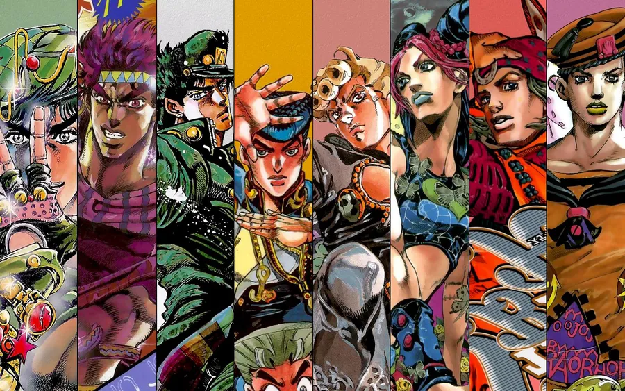

Phantom Blood
1880 • Angleterre
Découvrir →GOGOGO • ゴゴゴゴ
Explore la lignée Joestar, les pouvoirs des Stands et les moments cultes de l'œuvre d'Hirohiko Araki.

Une aventure à travers les générations
1880 • Angleterre
Découvrir →1938 • Europe
Découvrir →1987 • Égypte
Découvrir →1999 • Morioh
Découvrir →Manié par Jotaro Kujo
Stand à courte portée doté d'une force brutale, d'une précision chirurgicale et de la capacité d'arrêter le temps.